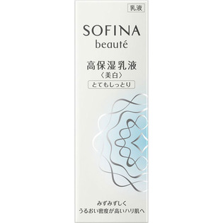

返回列表
产品名称：ソフィーナボーテ 高保湿乳液美白 とてもしっとり

花王 ソフィーナボーテ 高保湿乳液美白 とてもしっとり ６０Ｇ（医薬部外品）
メーカー 花王
JANコード 4901301325198
商品の特徴
夜のみ使用で約３ヶ月分
- 成分・分量
- カモミラET＊、水、グリセリン、BG、ジメチコン、ジカプリン酸ネオペンチルグリコール、PEG1540、α-オレフィンオリゴマー、ヘキサデシロキシPGヒドロキシエチルヘキサデカナミド、グリセリン脂肪酸エステル、アスナロ抽出液、オリブ油、ワセリン、チューベロースポリサッカライド液、水溶性ショウキョウエキス（K）、ユーカリエキス、スクワラン、アルギニン、ステアロイルグルタミン酸、ジイソステアリン酸ポリグリセリル、アルキル-1，3-ジメチルブチルエーテル、キサンタンガム、カルボキシビニルポリマー、架橋型ジメチコン、水酸化K、セタノール、無水エタノール、エタノール、パラベン、香料＊は「有効成分」無表示は「その他の成分」
- 用法及び用量
- ＜使用方法＞
適量（ポンプ３押し分）を顔全体になじませます。